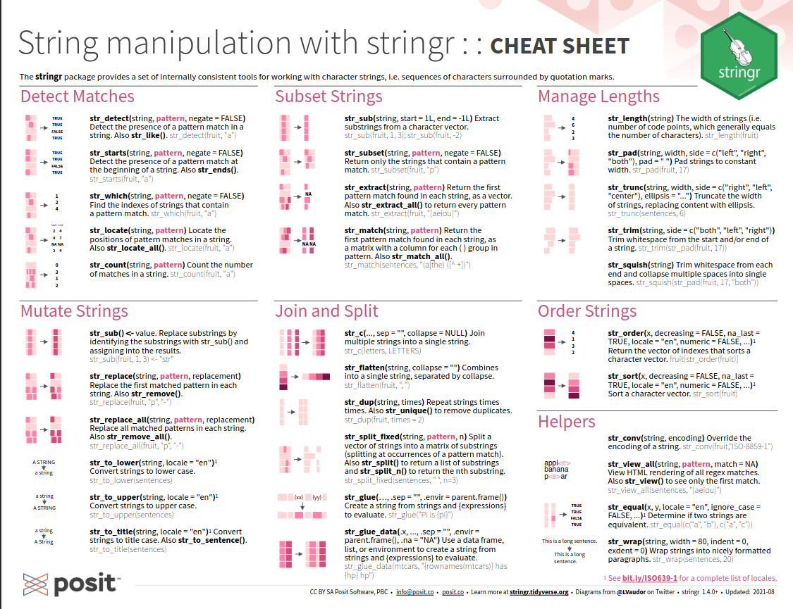

# A tibble: 12 × 3
id cond resp
<int> <chr> <chr>
1 1 cond1 yes
2 2 cond2 no
3 3 cond1 yes
4 4 cond2 yes
5 5 cond1 no
6 6 cond2 yes
7 7 cond1 yes
8 8 cond2 no
9 9 cond1 no
10 10 cond2 no
11 11 cond1 yes
12 12 cond2 yes
data2
# A tibble: 12 × 4
id cond resp output
<int> <chr> <chr> <glue>
1 1 1 Yes 1 had condition 1 and said "Yes"
2 2 2 No 2 had condition 2 and said "No"
3 3 1 Yes 3 had condition 1 and said "Yes"
4 4 2 Yes 4 had condition 2 and said "Yes"
5 5 1 No 5 had condition 1 and said "No"
6 6 2 Yes 6 had condition 2 and said "Yes"
7 7 1 Yes 7 had condition 1 and said "Yes"
8 8 2 No 8 had condition 2 and said "No"
9 9 1 No 9 had condition 1 and said "No"
10 10 2 No 10 had condition 2 and said "No"
11 11 1 Yes 11 had condition 1 and said "Yes"
12 12 2 Yes 12 had condition 2 and said "Yes"
x<-c("apple", "banana", "pear")str_sub(x, 1, 3)# substr() in base R
[1] "app" "ban" "pea"
# Negative numbers count backwards from endstr_sub(x, -3, -1)
[1] "ple" "ana" "ear"
Extracting strings
Useful when you don’t have delimiters. But use delimiters!
penguins|>mutate(species =str_sub(species, 1, 1), island =str_sub(island, 1, 3), year =str_sub(year, -2, -1), .keep ="used")
# A tibble: 344 × 3
species island year
<chr> <chr> <chr>
1 A Tor 07
2 A Tor 07
3 A Tor 07
4 A Tor 07
5 A Tor 07
6 A Tor 07
7 A Tor 07
8 A Tor 07
9 A Tor 07
10 A Tor 07
# ℹ 334 more rows
# A tibble: 344 × 2
sex sex_upper
<fct> <chr>
1 male Male
2 female Female
3 female Female
4 <NA> <NA>
5 female Female
6 male Male
7 female Female
8 male Male
9 <NA> <NA>
10 <NA> <NA>
# ℹ 334 more rows
But notice what happened to data type
Combining strings
Combining strings
Combine multiple strings into a single string with stringr::str_c():
str_glue("My name is {name}, and my age next year is {age + 1}.")
My name is Fred, and my age next year is 51.
str_glue("My name is {name}, and my age next year is {age + 1}.", name ="Jane", age =40)
My name is Jane, and my age next year is 41.
Combining strings with output
Apply to each row of a data frame
penguins|>mutate(full_island =str_glue("{island} Island"))|>arrange(bill_length_mm)|>select(species, island, full_island)
# A tibble: 344 × 3
species island full_island
<fct> <fct> <glue>
1 Adelie Dream Dream Island
2 Adelie Dream Dream Island
3 Adelie Torgersen Torgersen Island
4 Adelie Dream Dream Island
5 Adelie Torgersen Torgersen Island
6 Adelie Torgersen Torgersen Island
7 Adelie Biscoe Biscoe Island
8 Adelie Torgersen Torgersen Island
9 Adelie Torgersen Torgersen Island
10 Adelie Biscoe Biscoe Island
# ℹ 334 more rows
Cheatsheet

Solving the problem
data1
# A tibble: 12 × 3
id cond resp
<int> <chr> <chr>
1 1 cond1 yes
2 2 cond2 no
3 3 cond1 yes
4 4 cond2 yes
5 5 cond1 no
6 6 cond2 yes
7 7 cond1 yes
8 8 cond2 no
9 9 cond1 no
10 10 cond2 no
11 11 cond1 yes
12 12 cond2 yes
data2
# A tibble: 12 × 4
id cond resp output
<int> <chr> <chr> <glue>
1 1 1 Yes 1 had condition 1 and said "Yes"
2 2 2 No 2 had condition 2 and said "No"
3 3 1 Yes 3 had condition 1 and said "Yes"
4 4 2 Yes 4 had condition 2 and said "Yes"
5 5 1 No 5 had condition 1 and said "No"
6 6 2 Yes 6 had condition 2 and said "Yes"
7 7 1 Yes 7 had condition 1 and said "Yes"
8 8 2 No 8 had condition 2 and said "No"
9 9 1 No 9 had condition 1 and said "No"
10 10 2 No 10 had condition 2 and said "No"
11 11 1 Yes 11 had condition 1 and said "Yes"
12 12 2 Yes 12 had condition 2 and said "Yes"